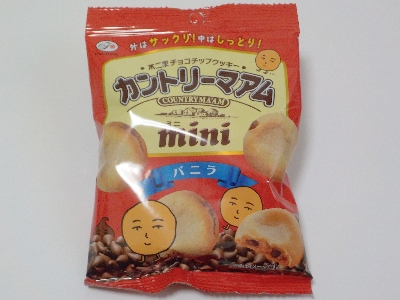
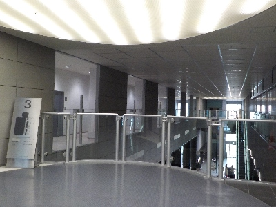
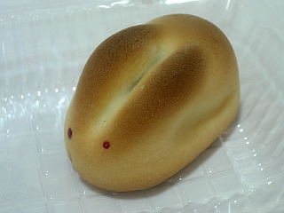

山陰放送開局70周年BSSまつり
2024/03/23

アナウンサーの森谷佳奈さんが見たいと思いBSSまつりに行きました。
会場入り口でカントリーマアムminiをもらいました。凄いサービスです。
森谷さんは会場内で普通にお客さんの相手（？）をされていました。私は列に並びはしませんでしたが、近くで何度も見れてよかったです。

椅子はいろんなところにありましたが、人が多かったので座れませんでした。3Fは空いてたのでここでちょっと休憩しました。
展示ブースが多かったので、いろいろあって楽しかったです。でも疲れたなー。
BSSまつり笑ラッテ55スペシャル
2009/03/14
TV「土曜日の生たまご」で会場の様子が映っていたんですが、人がわりとまばらだったので、「空いてる！。アンガールズが見やすいかも？」と思ってくにびきメッセに出かけました。
駐車場が少ないので、会場周辺の道路は混雑していましたが、車を別の場所に駐車して歩いて行ったので、すんなりと到着しました。
実際メッセの中はそんなに混雑してなくて、「ポケモンアドベンチャーパーク」以外は列はあまりありませんでした。
アンガールズも前もって場所を確保していなくても、立っていれば見れたので、とっても快適でした。アンガールズさんですが、TVでいっぱい見なれているせいか、そんなにキモくなかったです。
寿製菓さんのブースでは、白うさぎ饅頭の目を自分で付ける作業をしました。（饅頭は貰いました）

他にもラジオ「土曜亭らじおDON」の放送が見れたり、JAグループの坦々メン、健菜厨房の蕎麦餃子、オタフクソースのお好み焼きを食べたりして、なかなか楽しい時間が過ごせました。